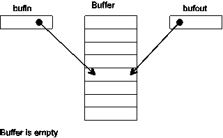
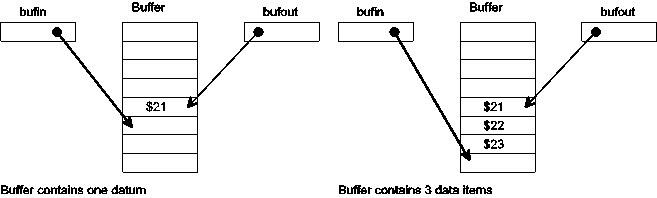
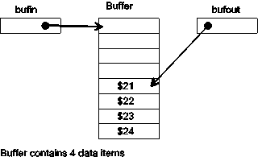
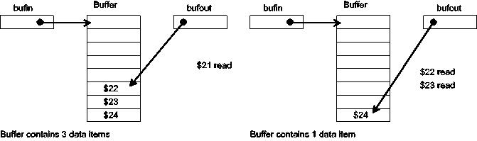
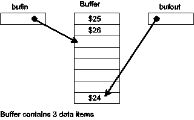
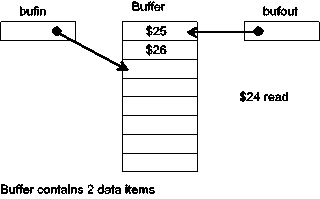
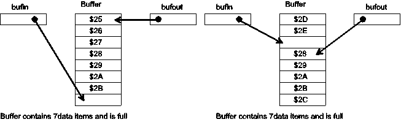

| Previous Section | Next Section | Index | Questions | Search the Text |
A buffer is a data storage area that goes between a data provider and a data consumer. For the first case we will look at, a program is the data provider and the SCI transmitter is the data consumer. In the second case the SCI receiver is the data provider and a program is the data consumer. A third demonstration program demonstrates buffering a line of input text, complete with line editing.
Either port could be used, however evaluation boards which have D-Bug12 operating do not allow interrupt routines for SCI0. For this reason SCI1 will be used in the examples.
Buffering is a basic technique used when interfacing to virtually any input/output device. It is used when the rate or quantity of data that is being provided does not match the rate or quantity of the data consumed. For instance, in our first case, the output buffer, the SCI is connected to a terminal, and our program wants to write a message, which is a character string. The program has many characters to send, but the SCI can only send one character at a time. With buffering, all the characters can be placed in the buffer by the program, which can then go on to other tasks. The characters are taken from the buffer and transmitted one at a time.
In the case of input buffering, the data provider, a keyboard in this case, provides input at arbitrary times which might not be when the microcontroller program is expecting them. The buffer will hold those characters until the program is ready to process the input.
Most buffers are implemented as a circular array. This gives the impression that the array is endless as long as its capacity is not exceeded. Data is placed in the array at address bufin, and then bufin is incremented. Data is removed from the array at address bufout, and then bufout is incremented. When either bufin or bufout are beyond the end of the array, they are reset to the start of the array. Let's look at a buffer in operation. At the start of operation, bufin and bufout point to the same address in the array. This means that the buffer is empty.

When we add data to the buffer, bufin is incremented.

When we add a data item to the last location in the buffer, the pointer is set to the start of the buffer.

The data consumer removes data with an analogous process. Removing one data item, bufout gets incremented afterwards:

The data provider can still add data while data is being removed:

Bufout wraps just like bufin:

The consumer can continue to remove data until the buffer is empty (bufin=bufout). Then the consumer must wait for the provider to supply more data. The provider can add data until the buffer is full. Then it must wait for the buffer to have room before it can continue. The buffer is full when there is only one free space left. There must be at least one free space because if the buffer were completely full bufin would equal bufout and that would indicate an empty buffer! Both of the following figures show full buffers:

One or both of the consumer or provider is typically a interrupt routine. For instance, when we are buffering an input device, the devices data available condition causes an interrupt. In this case the data provider is an interrupt routine. It is important that interrupt routines not "block" that is wait for some action to occur. A blocked interrupt routine will tend to lock the system as no other interrupts can be serviced. A data provider that is implemented as a subroutine may wait for free space in the buffer if the buffer is full. Likewise a data consumer that is implemented as a subroutine may wait for data if the buffer is empty. However consumers and providers as interrupt routines may not wait. We will see how this is handled in the examples that follow.
If the buffer is to avoid filling up, we need to be able to remove data while we are adding data. We do this by having two processes - one adds the data to the buffer, and the other removes data.
In the case of sending character strings to a terminal, the application program is the process that adds data to the buffer, while an interrupt routine is the process that removes data. When an output buffer is empty, the interrupt routine which empties the buffer is disabled. When the application adds data to the buffer, it re-enables the interrupt routine.
We will use the following data declarations for our output buffering. These data declarations represent the state of our output process.
BUFSIZE EQU 64 ; Buffer will hold 63 bytes (characters)
org RAMSTART
bufin ds 2 ; Buffer pointer (input)
bufout ds 2 ; Buffer pointer (output)
buffer ds BUFSIZE
Our program must initialize bufin and bufout, then initialize the serial port.
;;Initialize buffers
movw #buffer bufin ; Set buffer pointers
movw #buffer bufout
;; Initialize serial port
movw #serint UserSCI1 ; Set interrupt vector
movb #156 SC1BDL ; Set 9600 BPS (24MHz system clock)
movb #$08 SC1CR2 ; Enable transmitter (TE)
The interrupt routine implements the data consumer. An interrupt will occur when the TDRE flag is set, indicating that a character can be transmitted. The interrupt routine takes the next character from the buffer and transmits it. If there are no more characters to transmit, the interrupt routine clears the TIE control bit so that the TDRE bit no longer will request an interrupt.
serint:
ldaa SC1SR1 ; Must read SC1SR1 every time
ldx bufout ; see if character to send
cpx bufin
bne serint1 ; bufin != bufout so there is one.
bclr SC1CR2 $80 ; disable transmitter interrupt
; because no characters to send
rti ; Finished!
serint1:
movb 1,x+ SC1DRL ; put buffer character into TDR
cpx #buffer+BUFSIZE ; buffer not past end?
bne serint2
ldx #buffer ; if past end, reset to start
serint2:
stx bufout
rti
The application program is the data producer. Adding data to the buffer takes many instructions, so we will use a subroutine named putchara. To output a character, the application puts the character in accumulator A and then calls putchara. The subroutine must handle the case where the buffer is full by waiting until there is room. Additionally, it must make sure the TIE control bit is set so the interrupt routine will be invoked.
putchara:
pshx
tfr d x ; save A:B in X, X on stack
putch2: ldd bufin ; calculate # characters in buffer
subd bufout
bpl putch3
addd #BUFSIZE ; If negative, adjust (circular arithmetic)
putch3: cpd #BUFSIZE-1 ; Is there room?
bne putch4
wai ; no room -- wait and try again
bra putch2
putch4: tfr x d ; a has character
ldx bufin ; get bufin again
staa 1,x+ ; store character, increment buffer position
cpx #buffer+BUFSIZE ; check for wrap
bne putch5 ; not needed?
ldx #buffer ; wrap to start
putch5: stx bufin ; save new bufin value
pulx ; restore register X
bset SC1CR2 $80 ; Make sure transmitter interrupt enabled
rts
The subroutine can use the wai instruction to wait for the buffer to empty because an interrupt will occur when the TDRE bit is set and the interrupt routine removes a byte from the buffer.
If we are buffering data from an input device and the buffer fills, we will loose new data because it is typically not possible to stop the input device while the buffer empties. The solution is to make the program faster or sometimes to have a bigger buffer. When an input buffer is empty, the application routine typically waits for data to arrive via an interrupt routine.
In this example, the input device is connected to the keyboard, which is very slow since a human is pushing the keys. In many applications we don't have to worry about the input buffer overflowing. We will use a single character input buffer called charin. Note that if the buffer overflows, we will lose characters. We no longer need variables with pointers to the input and output addresses of the buffer. However we do need a way to know if the buffer is empty or full. We will use the byte value 0 to represent an empty buffer. This is the ASCII NUL value which is generally not used. Adding input buffering to the output buffering example, we get the following data declarations, adding only a single new variable:
BUFSIZE EQU 64 ; Buffer will hold 63 bytes (characters)
org RAMSTART
bufin ds 2 ; Buffer pointer (input)
bufout ds 2 ; Buffer pointer (output)
buffer ds BUFSIZE
charin ds 1 ; character input buffer
The initialization code must additionally initialize the character input buffer to be empty and enable the receiver and the receiver interrupt:
;;Initialize buffers
movw #buffer bufin ; Set buffer pointers
movw #buffer bufout
clr charin ; no character
;; Initialize serial port
movw #serint UserSCI1 ; Set interrupt vector
movb #156 SC1BDL ; Set 9600 BPS
movb #$2c SC1CR2 ; Interrupt RIE, enable TE RE
The interrupt routine is invoked for both RDR full and TDR empty. This means we will need to analyze the status register to determine the cause of the interrupt. It is also possible that both RDR is full and TDR is empty, so we need to handle that case as well. TDR will be empty if there is nothing to transmit, however that won't cause any problems.
serint:
brclr SC1SR1 $20 serint2 ; check RDRF, branch if clear
movb SC1DRL charin ; get character into buffer
serint2:
brclr SC1SR1 $80 serint3 ; check TDRE, branch if clear
ldx bufout ; see if character to send
cpx bufin
bne serint4
bclr SC1CR2 $80 ; disable transmitter interrupt
; because no characters to send
serint3:
rti
serint4:
movb 1,x+ SC1DRL ; put buffer character into xmitter
cpx #buffer+BUFSIZE ; buffer not past end?
bne serint5
ldx #buffer
serint5:
stx bufout
rti
We need a subroutine, getchara, which will retrieve the character from the input buffer. This subroutine will wait for a character if the buffer is empty.
; getchara -- get a character from the keyboard and return it in A
getchara:
ldaa charin ; Is there a character?
bne getchara1
wai ; Wait for next interrupt
bra getchara ; try again
getchara1:
clr charin ; mark buffer as empty
rts
This example has been provided as a program part022c.asm, which can be run in the simulator here. It calls getchara and putchara repeatedly to echo everything typed into the terminal.
The getchara subroutine blocks because it will not return until a character is available. In many applications, it is desirable to continue operation rather than wait for a character. In this case a non-blocking version is desirable. A small modification of the above subroutine makes it return the value zero if no character is available, otherwise it returns the character.
; getcharNB -- get a character from the keyboard and return it in A
; but return zero if no character is available.
getcharNB:
ldaa charin ; No character available?
beq getcharNB1
clr charin ; mark buffer as empty
getcharNB1:
rts
The major concern with writing buffered I/O routines in C is handling the volatile keyword. The input/output buffering program, part022c.asm, was re-implemented in C as part022c.c. The buffer memory declarations need to be:
#define BUFSIZE 64 unsigned char buffer[BUFSIZE]; unsigned char * volatile bufin = buffer; unsigned char * volatile bufout = buffer; volatile unsigned char charin = 0; /* Input buffer -- single byte */
The volatile keywords are needed because bufin, bufout, and charin are modified both inside and outside of the interrupt service routine. The interrupt service routine becomes:
void __attribute__((interrupt)) serint(void) {
if ( SC1SR1 & 0x20 ) {
/* RDRF is set */
charin = SC1DRL;
}
if ( SC1SR1 & 0x80 ) {
/* TDRE is set */
if ( bufin == bufout ) {
/* Done -- disable transmitter interrupt */
SC1CR2 &= ~0x80;
} else {
SC1DRL = *bufout++;
if ( bufout == buffer+BUFSIZE ) {
bufout = buffer;
}
}
}
}
Getchar becomes:
unsigned char getchar(void) {
unsigned char result;
while ( (result = charin) == 0 ) {
__asm__ __volatile__ (" wai ");
}
charin = 0;
return result;
}
Note that in a "normal" C program, if charin were zero the while loop would never exit. Of course, charin will change via the interrupt service routine. If charin were not declared volatile, the C compiler might optimize the function to only check the value of charin once. Finally, putchar becomes:
void putchar(unsigned char val) {
do {
int used = bufin - bufout;
if ( used < 0 ) used += BUFSIZE;
if ( used < BUFSIZE-1 ) {
break;
}
__asm__ __volatile__ (" wai ");
} while ( 1 ); /* loop until break */
*bufin++ = val;
if ( bufin == buffer+BUFSIZE ) {
bufin = buffer;
}
SC1CR2 |= 0x80; /* Make sure transmitter interrupt enabled */
}
For the last example, we will look at a more complicated situation, that of a command interface via the serial port. We want to be able to enter a line of text at the terminal, and then process the entire line as a command. While we are entering text, we want to be able to edit what we have entered, using the backspace key to erase invalid keystrokes.
Rather than buffering a single character of input, we will instead buffer a full line of input. The interrupt service routine will now be a command processing process, inputting keystrokes, echoing on the display, editing and buffering a line. When the line is complete ("Enter" key depressed), the interrupt service routine will process the line. In this example, processing the line will consist of displaying the line a second time. It is displayed the first time while it is being entered.
We have an interesting situation in that the interrupt service routine will be using putchara to write characters. If the output buffer is full we have a deadlock condition since the interrupt service routine cannot be re-entered to remove characters from the buffer. For this reason, the routine is made re-entrant by reenabling interrupts within the routine. This is a tricky process that requires careful design and thorough testing.
We start out by defining the various status and control bits. We will be manipulating them frequently, and this makes the code more readable to give the bits symbolic names.
#include registers.inc TDRE equ $80 ; Bits in SC1SR1 RDRF equ $20 TIEb equ $80 ; Bits in SC1CR2 ; (TIE is already used, so we will add a "b" to the end) RIE equ $20 TE equ $08 RE equ $04 BUFSIZE equ 32 LINESIZE equ 64
The data declarations include our output buffer, but the single character input buffer is replaced with a line buffer and a pointer to the end of the line.
org RAMSTART bufin ds 2 ; Buffer pointer (input) bufout ds 2 ; Buffer pointer (output) buffer ds BUFSIZE linep ds 2 ; Line buffer pointer linebuf ds LINESIZE
The program starts by initializing the buffer pointers and the serial port.
org PRSTART
lds #RAMEND
;;Initialize buffers
movw #buffer bufin ; Set buffer pointers
movw #buffer bufout
movw #linebuf linep
;; Initialize serial port
movw #serint UserSCI1 ; Set interrupt vector
movb #156 SC1BDL ; Set 9600 BPS
movb #RIE|TE|RE SC1CR2 ; Interrupt RIE, enable TE RE
The main program is now an idle loop.
cli ; enable interrupts
;; Test Program
loop: wai ; do nothing but loop
bra loop
The putchara function is unchanged.
; Putchara sends the character in register A to the display
putchara:
pshx
tfr d x ; save A:B in X, X on stack
putch2: ldd bufin ; calculate # chars in buffer
subd bufout
bpl putch3
addd #BUFSIZE ; If negative, adjust (circular arithmetic)
putch3: cpd #BUFSIZE-1 ; Is there room?
bne putch4
wai ; no room -- wait and try again
bra putch2
putch4: tfr x d ; a has character, x has buffer address
ldx bufin ; get bufin again
staa 1,x+ ; store character, increment buffer position
cpx #buffer+BUFSIZE ; check for wrap
bne putch5 ; not needed?
ldx #buffer ; wrap to start
putch5: stx bufin
pulx ; restore register X
bset SC1CR2 TIEb ; Make sure transmitter interrupt enabled
rts
The bulk of the program is the interrupt service routine. Remember that in our initial idle state RIE is 1 but TIEb is 0. We will enter the routine if a character is typed at the keyboard of the terminal.
;; Interrupt routines serint: ldaa SC1CR2 ; save interrupt settings bclr SC1CR2 TIEb|RIE ; disable this interrupts nop ; (delay because of 68HC12 bug) cli ; so we can enable higher priority
We have saved the interrupt enable bits in accumulator A, then disabled the serial interrupts. At this point it is safe to clear the interrupt flag allowing other interrupts to occur. We will now use accumulator B as our character input buffer and check for a character being entered. Note that if the receiver interrupt was not initially enabled we don't check for a character.
clrb ; assume no character read
bita #RIE ; if receiver was disabled, don't check it
beq serint2 ; (this solves re-entrancy problem)
brclr SC1SR1 RDRF serint2 ; check RDRF, branch if clear
ldab SC1DRL ; get character into register b
serint2:
If character read, it is now in B. We will process it later after checking the transmitter. As with the receiver, if the transmitter interrupt was disabled, we don't want to check the transmitter. The code is similar to what we used before, however if the buffer is empty we don't disable the transmitter interrupt (it already is disabled), but we clear the TIEb bit in accumulator A so when we eventually restore the interrupt enable flags the transmitter will be disabled.
bita #TIEb ; If transmitter was disabled, don't check TDRE
beq serint3 ; (just to speed things up)
brclr SC1SR1 TDRE serint3 ; check TDRE, branch if clear
ldx bufout ; see if character to send
cpx bufin
bne serint4
anda #~TIEb ; disable transmitter interrupt
; because no characters to send
bra serint3
serint4:
movb 1,x+ SC1DRL ; put buffer character into xmitter
cpx #buffer+BUFSIZE ; buffer not past end?
bne serint5
ldx #buffer
serint5:
stx bufout ; save buffer address
At this point we may be processing an input character. In that case, we will want the transmitter enabled if it were initially enabled so that we can echo characters to the display. However we still don't want the receiver enabled.
serint3:
psha ; save original SC1CR2 contents
anda #TIEb ; enable serial port transmitter, if necessary
oraa SC1CR2
anda #~RIE ; make certain receiver is still off
staa SC1CR2 ; Now routine can be reentered, for transmitting
tba ; set condition codes, is there a character?
bne serint6 ; then handle input into line buffer
We are going to return from the interrupt, so we want to enable the receiver if it were initially enabled.
serintend:
pula ; retrieve original SC1CR2 contents
anda #RIE ; Was receiver enabled?
oraa SC1CR2 ; then enable it now
staa SC1CR2
rti
If we reach this point, there is a character in A which was typed and we need to process. We need to look at the character to decide what to do. After we process the character, we branch to serintend which returns from the interrupt service routine.
serint6:
ldx linep ; get address for next character
cmpa #13 ; Check for "Enter" key
beq serintline ; Yes -- finish up and process
cmpa #8 ; check for backspace
bne serint7 ; no -- branch
The backspace key deletes the last character typed. It does this by decrementing the pointer linep. To make the display look correct, it backs up the cursor, writes a space character, then backs up the cursor again. If the backspace key is hit when the line is empty, the "bell" is sounded, and nothing else happens.
cpx #linebuf ; At start of line already?
beq serintbeep ; then give error (line empty)
jsr putchara ; otherwise erase on display
ldaa #' ; backspace, space, backspace
jsr putchara
ldaa #8
jsr putchara
dex ; remove from buffer
stx linep
bra serintend
We reach this point if we are to put the character in the line buffer. If the line buffer is full, then we ring the bell instead.
serint7:
cpx #linebuf+LINESIZE-2 ; See if there is room
beq serintbeep ; no room for character
stab 1,x+ ; room -- save it
jsr putchara ; and echo it
stx linep
bra serintend
We ring the terminal "bell" by writing the ASCII BEL code, which is a 7.
serintbeep:
ldaa #7 ; beep to indicate an error
jsr putchara
bra serintend
The enter key indicates the end of the line. In that case we send the carriage return and line feed characters to the terminal display and put a NUL character at the end of the line buffer to indicate its end. Linep is reset to the start of the buffer.
serintline:
jsr putchara ; echo CR and LF
ldaa #10
jsr putchara
ldaa #0 ; delimit string
staa 0,x
movw #linebuf linep ; Ready to accept new line
The line gets processed here, and after processing branches back to serintend to return from the interrupt routine. During processing all interrupts are enabled, but keyboard input is blocked because the TIEb bit is 0.
;; Action to take on complete line goes here
;; We will just echo the line for now
ldx #linebuf
serl1: ldaa 1,x+
beq serl3 ; none left
jsr putchara
bra serl1
serl3: ldaa #13 ; Do CRLF sequence
jsr putchara
ldaa #10
jsr putchara
bra serintend
The source code for this program is here and the program can be run using the simulator here.
Continue with Serial Peripheral Interface.
Return to the Index.